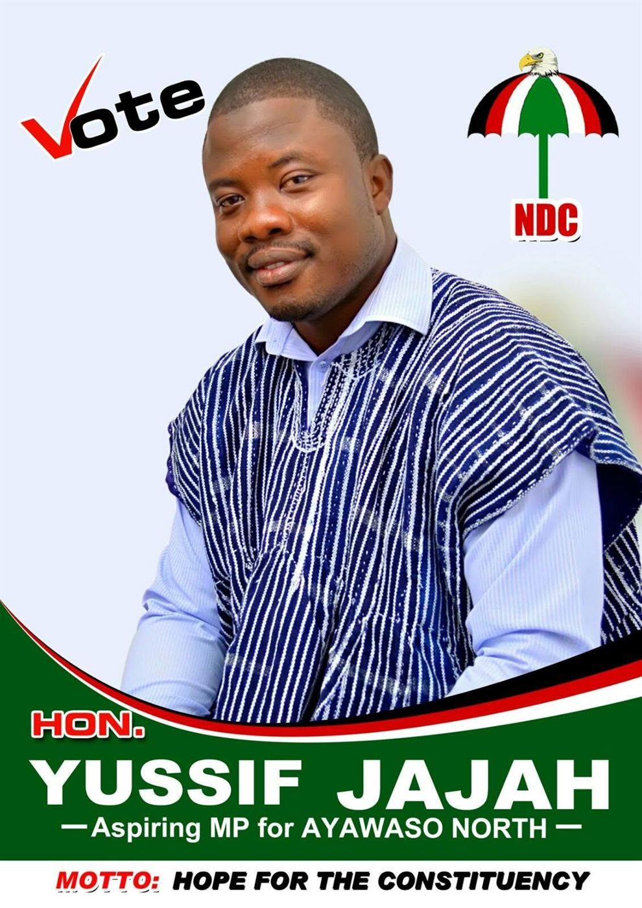
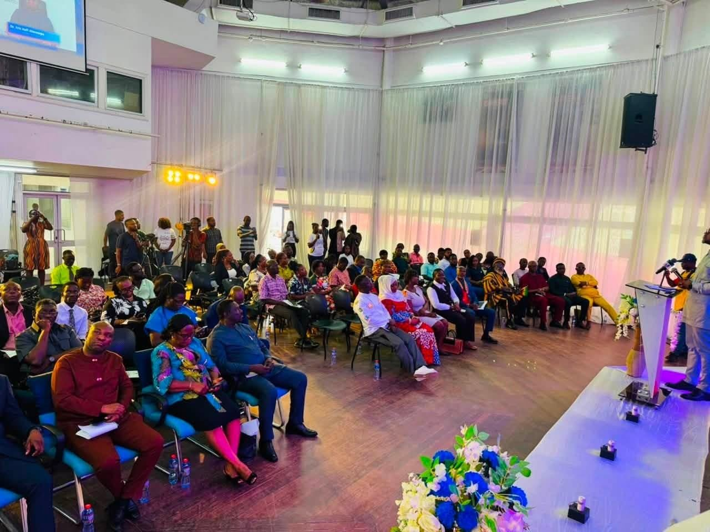

Chapter 03 · The Journey
From Bole to the Ministry.
Ten chapters of a life in motion: schooling in Accra, finance in Scotland, decentralisation research at home, and three mandates from the same streets.

Milestones
One road, walked in full.
- Bole → Accra
Roots
Born to Bole, raised in Mamobi, Nima and Accra New Town. Educated at Accra High School.
- 2009
BSc, University of Professional Studies
Graduates in accounting and finance from UPSA, Accra.
- 2011
MBA, University of Dundee
Completes an MBA in International Oil and Gas Management in Scotland.
- 2011 to 2012
Oil and gas consultant
Advises on energy projects before entering public service.
- 2013 to 2016
Research fellow on decentralisation
Serves with the Inter-Ministerial Coordinating Committee on Decentralisation.
- 2016
Elected MP for Ayawaso North
Wins 22,144 votes, 59.97% of the votes polled.
- 2020
Re-elected with an increased mandate
Returned with 28,207 votes, 62.66% of the poll.
- 2024
Third term, and 135 youth groups equipped
Re-elected after a year of sports investment across the constituency.
- 2025
Deputy Minister, and ground broken on the drains
Appointed Deputy Minister for Tourism, Culture and Creative Arts. Cuts sod on the inner-community drainage works.
- 2026
The first AI trainees graduate
His free AI and Digital Skills Training programme takes young people of Ayawaso North through a fourteen day course, and its first cohort graduates.
